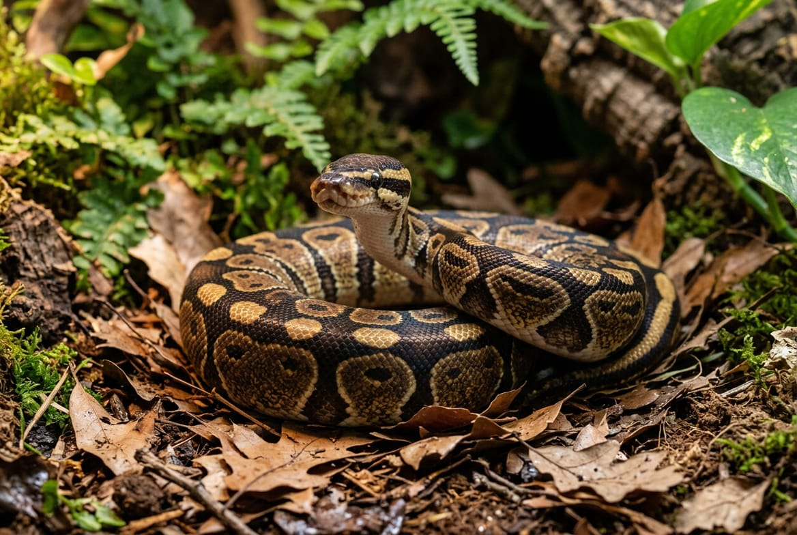

Ball Python · Python regius
A complete, checked-fact printable manual: enclosure, heat and humidity, feeding refusals, health triage, and the routines that carry a snake through 20 to 30 years.

Contents
Every page is written to be used, not just read once.
Getting Started
Section 01 · Quick Profile
Section 02 · Full Care Guide
Section 03 · Health & Common Issues
Section 04 · Quick Reference
Section 05 · Owner Tools
Reference
Start here
Three ways to get value from it, depending on where you are right now.
Read pages 4 through 9 in order before buying anything. Enclosure material, heat control, and humidity are the decisions that are expensive to redo, and they are the three that most often get chosen wrong. Get those right the first time, then use the Budget & Shopping List on page 16 to buy once.
Jump to the Setup Checklist and Climate Targets on page 14 to audit what you have, and the Health Red Flags section starting on page 10 if anything seems off. If the problem is that your snake won't eat, start on page 13 instead, most feeding refusals are normal and the page tells you which ones aren't.
Why this package exists
Ball python husbandry has moved a long way from the small-tub advice that dominated the hobby for years. This package reflects current enclosure-size, humidity, and enrichment standards, including the peer-reviewed housing research on page 9, cross-checked against veterinary and herpetological sources rather than recycled forum advice.
Not a substitute for
A reptile-experienced veterinarian. This is a husbandry reference for day-to-day care. Anything urgent or health-related is always a vet call, not a page in this book.
Section 01
Everything at a glance before you read the detail.
| Scientific name | Python regius, also called the royal python |
| Adult size | 3 to 5 ft (90 to 150 cm), 3 to 5 lbs; females noticeably larger |
| Captive lifespan | 20 to 30 years typical, with documented individuals past 40 |
| Native range | Grassland, open forest, and farmland, West and Central Africa |
| Diet type | Obligate carnivore; appropriately sized frozen-thawed rodents |
| Enclosure minimum (adult) | 4×2×2 ft (≈120 gal), front-opening, PVC preferred |
| Handling difficulty | Beginner to intermediate; defensive as juveniles, mellow as adults |
| Conservation status | Least Concern (IUCN); wild populations pressured by collection |
$300 to $800 for enclosure, thermostat-controlled heat, substrate, hides, and clutter. Up to $1,200 for premium PVC and a bioactive build.
$20 to $60 for frozen-thawed rodents, substrate replacement, and the electricity to run heat continuously.
Budget for the worst case too
A sick or emergency visit runs $100 to $500 or more, and imaging or surgery pushes that higher. Neither is likely if you follow this package, but a 30-year animal will need a vet at some point. Plan for it now rather than deciding in an emergency.
Section 02 · Full Care Guide
4×2×2 ft (48×24×24 in, roughly 120 gallons, about 8 square feet of floor space) is the adult standard, and the enclosure should be at least as long as the snake. Scale down while the snake is small: hatchlings up to about 300 grams do well in a 10-gallon or 20×11×13 in enclosure, and juveniles under 3 feet in a 36×18×18 in setup. PVC is the better material because it holds humidity far more effectively than glass. If you do use glass, cover three sides to help retain moisture.
Never
Run any heat source without a thermostat. An unregulated mat, tape, or panel is the direct cause of thermal burns and is a genuine fire hazard. Skip hot rocks entirely.
Section 02 · Full Care Guide
| Zone | Target |
|---|---|
| Warm side surface | 88 to 92°F |
| Air temperature, anywhere in the enclosure | Never above 95°F |
| Cool side | 75 to 80°F |
| Nighttime | 72 to 75°F |
| Humidity, baseline | 55 to 70% |
| Humidity, during a shed cycle | 70 to 80% |
Measure the warm side at the surface the snake actually lies on, not the air above it. Use a digital hygrometer rather than a cheap analog dial, which is notoriously inaccurate. If you need supplemental night heat, use a ceramic heat emitter rather than a light, so it doesn't disrupt the photoperiod.
Every single heat source runs through a thermostat, no exceptions. An under-tank heater, heat tape, a ceramic emitter, or a radiant panel will all keep climbing without one, and thermal burns are among the most common preventable injuries in this species. Budget for the thermostat as part of the heat source, never as an upgrade to add later.
This is where most ball python problems start. Too dry gives you bad sheds, retained eye caps, and a higher respiratory infection risk. Too wet without ventilation swings the other way toward scale rot. The species needs a stable middle, not a maximum.
A moisture-retaining substrate at 3 to 4 inches deep, a water bowl large enough to soak in, a dedicated humid hide packed with damp sphagnum moss, and light misting when the reading drops. PVC does most of this work for you; glass fights you the whole way.
UVB is genuinely optional for this species, kept successfully without it for decades, though a low-level gradient is reasonable enrichment if you want it. What is not optional is a consistent 12 hours light, 12 hours dark cycle on a timer, with no bright or colored bulbs at night.
| You notice | Likely means |
|---|---|
| Shed coming off in pieces rather than one length | Humidity running too low, especially through the shed |
| Snake soaking in the water bowl constantly | Too dry, too warm, or mites (see page 12) |
| Condensation on the walls, substrate staying wet | Too humid or too little ventilation, scale rot risk |
| Sitting on the cool side and refusing to move | Warm side running too hot, check the thermostat probe |
Section 02 · Full Care Guide
Cypress mulch or coconut coir and husk, 3 to 4 inches deep, are the best choices because they hold humidity at the level this species needs. Paper towel works fine temporarily, for quarantine or while treating a health issue, but it won't hold humidity long-term. Avoid aspen entirely, it tends to mold at ball python humidity. Full substrate changes run every 4 to 8 weeks with spot-cleaning in between.
Never
Use pine or cedar. Both contain aromatic oils that are toxic to reptiles. This is not a preference, it is a hard exclusion.
Don't handle a newly acquired ball python for the first one to two weeks, and don't start until it is eating on a normal schedule. A snake still adjusting to a new enclosure and without an established feeding rhythm is not ready to be picked up. Once settled, 2 to 3 sessions a week is a reasonable baseline, up to 3 to 5 for a snake that handles well, keeping each session to 15 to 30 minutes. Overhandling causes real stress in this species and is a common cause of feeding refusal, so more is not automatically better.
Approach from the side rather than straight down from above, which reads as predatory. Support the full body with both hands or along your forearms, lifting from the middle rather than near the head or tail, and let the snake move at its own pace instead of restraining it.
The two timing rules that actually matter
Wait 48 to 72 hours after a meal before handling, since handling too soon is one of the most common causes of regurgitation. And don't handle during a shed: cloudy or blue eyes mean the snake is functionally blind for a few days, which makes it more defensive and more likely to bite out of startlement rather than aggression.
Balling up tightly with the head tucked away (a fear response, not aggression), rapid or heavy breathing, hiding the head against your hand or arm, actively trying to move away, musking, or refusing the next meal. Musking, a foul-smelling release from the cloaca, means the snake feels seriously threatened. Put it back.
Section 02 · Full Care Guide
Ball pythons are obligate carnivores fed whole prey. Unlike most pets, the schedule gets slower as the animal gets bigger, not faster.
| Age | Frequency | Typical prey |
|---|---|---|
| Hatchling (0 to 6 mo) | Every 5 to 7 days | Hopper or small mouse, matched to body width |
| Juvenile (6 to 18 mo) | Every 7 to 10 days | Adult mouse to small rat |
| Adult (18 mo+) | Every 10 to 14 days | Medium rat |
Feed prey roughly the same width as the widest part of the snake's body, or about 10% of its weight. Too large risks regurgitation, too small provides inadequate nutrition over time. Resist the urge to overfeed on the theory that a bigger snake is a healthier one. Obesity is real and common in captive ball pythons, and a slow feeding schedule is a feature of the species, not a problem to solve.
Seal the frozen rodent in a bag and submerge it in warm, not hot, water until it is warm all the way through, usually 15 to 20 minutes for a medium rat. Never microwave prey: it heats unevenly, leaving hot spots that can burn a snake's mouth while the center stays frozen.
In the enclosure, with tongs. Moving a ball python to a separate feeding tub was once standard advice, but the added stress is now understood to raise both regurgitation and refusal rates in an already food-shy species.
Never feed
Live prey. A live rodent can bite and seriously injure a snake, sometimes fatally, especially one that isn't hungry enough to strike immediately. Frozen-thawed removes that risk entirely and is the standard veterinary recommendation. Also avoid prey wider than the snake's thickest point, and don't handle your snake right after handling rodents.
A heavy bowl large enough for the snake to soak in, refreshed daily and scrubbed weekly. Soaking supports shedding and hydration and is a behavior the snake will choose for itself when the option exists. A snake that suddenly soaks constantly is telling you something about heat, humidity, or mites, covered on pages 6 and 12.
Section 02 · Full Care Guide
The enrichment question has an actual answer
Kaufmann and colleagues, in PLOS ONE, compared 35 ball pythons in a conventional rack system against furnished terrariums containing substrate, hides, climbing structure, a water basin large enough to bathe in, elevated spots, and live plants. Their conclusion was unusually direct: from a welfare standpoint, rack systems are not an alternative to a furnished terrarium. Enrichment for this species is mostly a housing question, not a toy question.
The part with a study behind it. The whole furnished package outperformed the bare one, so treat the enclosure itself as the enrichment rather than something you add items to.
They are heavy-bodied and not agile, so the requirement is stability, not height. A branch braced firmly at both ends, or stacked cork rounds, adds usable space to an enclosure that otherwise has only a floor.
Snakes navigate chemically, so a novel scent is closer to a puzzle than a novel object is. A shed skin from another enclosure, or dragging prey across the substrate before offering it, costs nothing.
Not just two hides. Cork tubes and flats, leaf litter, and plant cover let the snake be out without being exposed. A cluttered enclosure gets used more, not less.
The study's terrariums included a bathing basin, not a drinking cup. It is one of the few genuinely passive enrichment items: you provide it, the animal decides.
Shifting a branch or adding a piece of cork every few weeks is reasonable. Tearing the enclosure down weekly is not, and never at the cost of access to the warm spot.
Section 03 · Health & Common Issues
What to watch for, and what to actually tell the vet.
Contact a vet promptly if you see
Wheezing, open-mouth breathing, or mucus and bubbles around the mouth or nostrils; belly scales that are discolored, blistered, or spreading; pinpoint hemorrhages, pus, or a sour smell in the mouth; a prolapse; visible mites; or refusal to eat alongside real weight loss.
Almost everything in this section traces back to one of the two. Respiratory infection, scale rot, stuck shed, and a large share of feeding refusals are husbandry outcomes before they are illnesses, which is why a reptile vet will ask about your setup before anything else. Having the numbers ready shortens the visit and often changes the diagnosis.
| Normal | Concerning |
|---|---|
| Refusing a meal or two in a snake in good body condition, especially in winter or breeding season | Refusal alongside weight loss, lethargy, or any other symptom on this page |
| Balling up when startled, then relaxing once left alone | Staying balled and hidden constantly, with no interest in moving at night |
| Cloudy or blue eyes and dull color for a few days before a shed | Shed coming off in fragments, or eye caps still attached afterward |
| Soaking in the water bowl occasionally, most often around a shed | Soaking constantly, or rubbing against surfaces persistently |
Section 03 · Health & Common Issues
Cause: temperatures running too low, incorrect humidity in either direction, a dirty enclosure, or ongoing stress. Vets see a seasonal spike each winter as enclosures cool along with the weather outside. Signs: wheezing, open-mouth breathing, visible mucus or bubbles around the mouth or nostrils, nasal discharge, lethargy, and sometimes gaping. Diagnosis: physical exam and listening to the lungs, with the vet asking about your temperature setup directly. Response: vet-prescribed antibiotics, not a wait-and-see approach. Correct the temperature and humidity in parallel or it recurs. Recovery: good when caught early; left untreated it can progress to pneumonia and become fatal.
This is the signature ball python illness
If you learn to recognize one condition in this package by sight and sound, make it this one. Raise the enclosure temperature, check humidity immediately, isolate the snake if you keep others, and get to a vet.
Cause: damp, dirty substrate, excess moisture, or poor enclosure hygiene, which is the exact failure mode of chasing humidity numbers without ventilation. Signs: belly scales discolored brown, reddish, or yellow, blisters or sores, scales that feel soft or damaged, and a foul odor. Diagnosis: visual exam; a vet may culture if it is advanced. Response: move the snake to a clean, dry enclosure immediately and correct humidity. Mild cases respond to antiseptic or antibiotic treatment, but anything spreading or blistering needs a vet. Recovery: affected scales usually resolve over the next one to two shed cycles once the environment is fixed.
The common thread
Both conditions are humidity failures in opposite directions. Respiratory infection follows cold and damp or cold and dry; scale rot follows wet substrate that never dries out. A stable 55 to 70% with real ventilation prevents both, which is why page 6 is the highest-leverage page in this package.
Section 03 · Health & Common Issues
Three conditions worth knowing by name before you ever see them.
Cause: usually secondary to stress, injury, or ongoing poor husbandry rather than arriving on its own. Signs: pinpoint hemorrhages on the gums, thick excess mucus or pus, cheesy-looking buildup in the mouth, a sour smell, visible swelling, open-mouth breathing, and refusing food. Response: veterinary treatment. This does not resolve on its own, and because it often rides on top of another husbandry problem, the vet visit should come with an honest account of your setup.
Cause: almost always introduced, on a new snake, on used decor, or from a shop or expo. Signs: tiny red or black specks on the scales or clustered around the eyes and heat pits, excessive soaking, rubbing against enclosure surfaces, and a drop in appetite. Response: treating the snake and deep-cleaning the entire enclosure, since mites persist in the environment after the snake looks clear. Expect to strip substrate completely and treat again on a schedule your vet sets.
Quarantine is the actual fix
Mites are the reason quarantine exists. Keep a new snake fully separate, on paper towel in a simple setup, with separate tools and hand-washing between enclosures, for long enough to be confident it is clean before it goes anywhere near an established animal.
Cause: a heat source running without a thermostat. That is the entire cause. Signs: discolored, blistered, or crusted patches on the belly or side, usually over the heat element, sometimes with the snake avoiding the warm side entirely. Response: vet visit; burns are wounds and can become infected. Prevention: every heat element thermostat-controlled, no hot rocks, and a probe placed where the snake actually contacts the heat.
The common thread
One of these three is fully preventable by a single piece of equipment, one by a quarantine habit, and one by not letting the other problems on this page run untreated. None of them are bad luck.
Section 03 · Health & Common Issues
Caused by humidity running too low, especially through the shed cycle itself. A healthy shed comes off in one length; a bad one comes off in flakes and patches. Raise humidity to 70 to 80% once the eyes go cloudy, make sure the humid hide is genuinely damp, and give the snake a rough surface such as cork to start the shed against. Never peel skin off by force. After every shed, check the eye caps: a retained cap is one of the easiest problems to miss because the snake's behavior looks completely normal, and it needs a vet rather than a home attempt.
Ball pythons are famous for this, and a healthy snake in good body condition refusing a meal or two is not an emergency. Work through the causes in order before assuming illness.
A healthy adult can go three to six months without eating and lose surprisingly little condition. What turns a fast into a problem is company: rapid weight loss, lethargy, mucus around the mouth, or wheezing alongside the refusal.
Bringing a meal back up hours to days after eating, most often from handling too soon after a feed, prey that was too large, or a warm side that is too cool to digest properly. It is hard on the digestive system and repeated episodes cause real damage. After one, leave the snake alone for 10 to 14 days, then offer a smaller than usual prey item. Repeated regurgitation is a vet visit, not a feeding adjustment.
Quick differentiator
A refused meal is a snake that never struck. A regurgitation is a meal that was eaten and came back. The first is usually normal and needs patience; the second means something in the setup or the handling schedule is wrong, and it needs to be found before the next feed.
Section 04 · Quick Reference
| Target | Range |
|---|---|
| Warm side surface | 88 to 92°F |
| Air temperature ceiling, anywhere | 95°F |
| Cool side | 75 to 80°F |
| Nighttime | 72 to 75°F |
| Humidity, baseline | 55 to 70% |
| Humidity, through a shed | 70 to 80% |
| Photoperiod | 12 hours light / 12 hours dark |
Print & post near the enclosure
Call a reptile vet now if
Wheezing, open-mouth breathing, or bubbles at the mouth or nose · belly scales blistering or discoloration spreading · pus, hemorrhages, or a sour smell in the mouth · a prolapse · visible mites · a burn over the heat source · refusal to eat alongside real weight loss
| Reading | Target |
|---|---|
| Warm side surface | 88 to 92°F |
| Air ceiling, anywhere | Never above 95°F |
| Cool side | 75 to 80°F |
| Nighttime low | 72 to 75°F |
| Humidity, baseline | 55 to 70% |
| Humidity, during shed | 70 to 80% |
| Feeding interval, adult | Every 10 to 14 days |
| Wait after feeding before handling | 48 to 72 hours |
Have this ready when you call
Warm and cool side temperatures, current humidity, whether heat runs on a thermostat, the date of the last meal and whether it stayed down, the date and quality of the last shed, and the weight trend from your Owner Log.
Before you panic about a refused meal
Check the season, check the eyes for a coming shed, then check temperature and humidity. A healthy snake in good condition that refuses one or two meals with none of the red flags above is doing something normal for the species.
Section 05 · Owner Tools
| Item | Typical cost |
|---|---|
| The snake (standard or wild-type) | $40 to $100 |
| Common single-gene morph, if you go that way | $50 to $150 |
| Enclosure, 4×2×2 ft for an adult | $100 to $450 |
| Heat source (mat, tape, ceramic emitter, or panel) | $30 to $80 |
| Thermostat | $25 to $100 |
| Digital thermometer and hygrometer | $25 to $50 |
| Substrate (cypress mulch or coconut coir) | $10 to $40 |
| Hides, water bowl, cork, and clutter | $30 to $120 |
| Optional low-level UVB and photoperiod LED | $20 to $70 |
| Initial vet exam | $50 to $150 |
| Total initial setup | $300 to $800 |
| Frozen-thawed rodents (annual) | $100 to $200 |
| Substrate replacement, every 4 to 8 weeks (annual) | $40 to $120 |
| Electricity, heat running continuously (annual) | $20 to $80 |
| Monthly ongoing | $20 to $60 |
Plan for, don't count on avoiding
Sick or emergency visits run $100 to $500 or more, with imaging or surgery pushing higher. Budget $50 to $150 for an annual wellness exam. A small emergency fund matters as much as any line item on this list, especially for an animal you will keep for decades.
Where not to cut corners
The thermostat and the enclosure. The thermostat is the difference between a heat source and a burn, and the enclosure size and material drive the humidity stability that most of Section 03 depends on. Save on decor and extras before you save here.
The long view
Spread $300 to $800 of setup across a 20 to 30 year lifespan and the ball python has one of the lowest per-year costs of any exotic pet. The expensive year is the first one.
Section 05 · Owner Tools
Section 05 · Owner Tools
| Symptom | Likely cause | Action |
|---|---|---|
| Wheezing, open-mouth breathing, bubbles at the mouth | Respiratory infection | Vet immediately (page 11) |
| Belly scales discolored, soft, or blistered | Scale rot | Dry, clean setup now; vet if spreading (page 11) |
| Pus, sour smell, or hemorrhages in the mouth | Mouth rot | Vet, does not self-resolve (page 12) |
| Tiny black or red specks, constant soaking | Mites | Vet + full enclosure strip (page 12) |
| Burn or blister over the heat source | Unregulated heat | Vet; add a thermostat before anything else (page 12) |
| Shed coming off in patches | Humidity too low | Raise to 70 to 80%, check eye caps (page 13) |
| Refusing food, otherwise normal and in good condition | Season, shed, or husbandry | Check temps and humidity, then wait (page 13) |
| Refusing food with weight loss or lethargy | Several possible causes | Vet visit, bring the Owner Log (page 20) |
| Meal brought back up after eating | Regurgitation | Rest 10 to 14 days, then smaller prey (page 13) |
| Out and roaming persistently, never settling | Too little cover, or too warm | Add clutter, verify temps (pages 5 and 6) |
| Musking or striking during handling | Stress or a feeding response | End the session, review timing (page 7) |
Section 05 · Owner Tools
Section 05 · Owner Tools
Photocopy this page, or track digitally. Consistency matters more than the format.
| Date | Weight | Warm °F | Cool °F | Humidity | Notes |
|---|---|---|---|---|---|
Why bother logging
In a species that normally refuses meals, the weight trend is the only thing that tells you whether a fast is routine or a symptom. Most of the conditions in this package show up as a weight change before anything else is visible.
| Date | Prey / event | Outcome |
|---|---|---|
| Date | Reason | Follow-up |
|---|---|---|
Section 05 · Owner Tools
What not to do
Don't treat handling as enrichment, especially around a shed cycle. Don't stack decor so densely that the snake can't reach the warm spot, thermal access outranks everything here. And don't read a still, hidden snake in a bare enclosure as a calm one, that is the pattern the rack comparison produced.
| Date | Change made | How it went |
|---|---|---|
Reference
| Dysecdysis | Incomplete or "stuck" shedding, in this species usually a whole-body problem caused by low humidity rather than a localized one. |
| Eye cap | The clear scale covering the eye, shed with the rest of the skin. A retained cap is easy to miss and needs a vet. |
| F/T | Frozen-thawed prey, the standard and safer alternative to live feeding. |
| Humid hide | A closed hide packed with damp sphagnum moss, giving the snake a high-humidity pocket it can choose to use. |
| Musking | A foul-smelling release from the cloaca, a clear signal the snake feels threatened. |
| Regurgitation | Bringing a meal back up after swallowing, most often from handling too soon, oversized prey, or insufficient warmth. |
| Scale rot | Infectious dermatitis of the belly scales, driven by damp, dirty substrate. |
| Stomatitis | Mouth rot: bacterial infection of the mouth, usually secondary to stress or poor husbandry. |
| Thermostat | The device that regulates a heat source to a set temperature. Not optional, and not the same thing as a dimmer or a timer. |
| Quarantine | Keeping a new or unwell snake fully separate from others, including separate tools and hand-washing between handling, to prevent disease and mite spread. |
Compiled from veterinary and herpetological sources, including the peer-reviewed ball python housing research cited on page 9, and cross-checked against current Beastly Facts guides at time of publication. This package is a husbandry reference, not a substitute for a reptile-experienced veterinarian, and is not a live website mirror. No external links or website CTAs appear in this document.
© Beastly Facts · Version 1.0 · September 2026